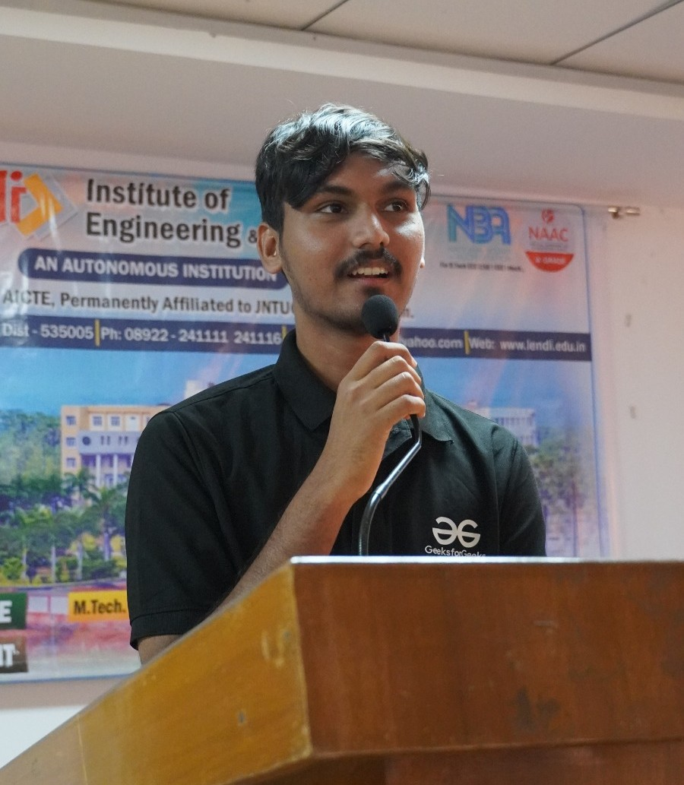

Hello, I'm
Tallapudi Salmon Raj
A passionate B.Tech CSE student crafting scalable web applications and intelligent systems. I blend powerful backend logic with sleek frontend designs.

About & Experience
Who am I?
I am a highly motivated Computer Science Engineering student (CGPA: 9.3) at Lendi Institute of Engineering and Technology. With a strong foundation in Data Structures, Algorithms, and Object-Oriented Programming, I specialize in Full Stack Development using Java, Spring Boot, React, and Python.
Beyond coding, I am an active student leader, continuously driving community engagement and organizing tech events.
Java Full Stack Developer Intern
Vayvora Technologies Private Limited (Jul 2026 – Present)
- Engineered backend services for PaiseWise, reducing API response time by 35% through performance optimization.
- Designed and deployed 10+ REST APIs using Spring Boot and microservices architecture, supporting scalable backend operations.
- Implemented secure authentication and authorization using Spring Security, JWT, and BCrypt, reducing unauthorized access risks by 40%.
- Integrated Spring Cloud Gateway and Netflix Eureka for service discovery, improving system availability and fault tolerance by 20%.
- Applied database-per-service architecture using PostgreSQL and H2, improving data isolation and scalability across services.
- Collaborated in Agile teams of 5+ developers using Git, reducing merge conflicts and improving deployment cycles.
PR & Outreach Lead
GeeksforGeeks Campus Mantri Program (2025 – 2026)
Led outreach initiatives and organized technical events, significantly increasing student engagement in coding activities across the campus.
Class Representative
Lendi Institute of Engineering and Technology
Act as the primary liaison between students and faculty, ensuring smooth communication and resolving academic concerns effectively.
-
ServiceNow Certified System Administrator (CSA) Jul 2026
-
EduSkills – Prompt Engineering for AI 2026
-
EduSkills – Java Full Stack Development 2025
-
Versant English Communication Certification 2024